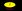

- Nota: Si buscas las solicitudes anteriormente resueltas, están: aquí.
¿Quieres meterte de lleno en La Frikipedia? Esta página te ayudará a hacerlo. Desde aquí podrás adoptar proyectos y portales que están muertos de una forma u otra por falta de un encargado que los organice, los cuide, y los saque de paseo periódicamente.
Cómo solicitar
Solicita la adopción de proyectos en la sección de proyectos (obviamente) y la de portales en la sección de portales (gracias, Capitán Obvio). Para hacerlo usa este código:
-
<li>{{adoptarp|usuario|sugerencia|descripción. ~~~~~}}
El campo usuario es tu nombre de usuario, sugerencia es el nombre del proyecto o portal del que quieres encargarte (siendo un nombre de proyecto tal que "Proyecto:Elquesea" y un nombre de portal "Portal:Elquesea") y descripción es un pequeño espacio opcional donde podrás listar las cualidades que te hacen merecedor del proyecto/portal, tu colaboración en ese proyecto/portal, tu antigüedad y contribuciones o incluso mostrarnos tus credenciales del FBI. Por último, las cuatro virgulillas ~~~~ añaden fecha y hora de la solicitud.
Cómo saber el veredicto
Los administradores responsables (remarco: los administradores responsables, no los usuarios) se reirán de ti
 aceptarán
aceptarán
 denegarán
denegarán
 o harán algún comentario antes del veredicto
o harán algún comentario antes del veredicto
sobre la adopción en esta misma página, así que no dejes de visitarla para saber si ya eres papá o mamá y, si no lo eres, porqué no. Sólo en casos extraordinarios se pondrán en contacto contigo directamente por medio de tu página de discusión. De vez en cuando, las solicitudes resueltas se irán archivando.
- Not so friki (disc • contribs • bloquear • reg • reg bloq)
- Proyecto:Adopción Pido ser co-encargado de este proyecto porque está atrasadísimo.
- El concurso debió acabar hace mucho tiempo.
- He adoptado algunos como este y este.
- Además de que soy activo; lo primero que haría sería dar los resultados del último concurso. 21:54 3 jun 2011 (CEST)
Ponte a ello, trabaja duro y serás recompensado con una galleta--<@Kirill0v> "If you come here, you'll find me... I promise" (Para consultas, insultos o sobornos por favor: aquí ) 17:41 23 jun 2011 (CEST)
Barman el camarero oscuro (disc • contribs • bloquear • reg • reg bloq)
- Proyecto:Adopción Debo ser el encargado por estas razones:
- La gente que aun cree en esta página nos insultará por no dejar paso a otros artículos debido a que hace tiempo que no termina.
- He adoptado el artículo Caminar.
- Soy un usuario altamente activo.
- Y puedo compraros los votos con un buen combinado.
Barman 20:07 22 ago 2014 (CEST)
Barman el camarero oscuro (disc • contribs • bloquear • reg • reg bloq)
- Proyecto:Limpieza Si hago esto es porque:
- Prototype hace mucho tiempo que no se le ve por aquí.
- Quiero que desaparezcan, por el bien de la web, los artículos de mantenimiento de la faz de nuestra ciudad.
Por favor, pido compresión y votos positivos, no lo hagan por mí, hacedlo por nuestros artículos.
Con amor. --Barman 17:47 14 nov 2014 (CET)
- Zarlangongo (disc • contribs • bloquear • reg • reg bloq)
- Portal:Religión
- El portal está abandonado, evidentemente.
- Se me han concedido portales anteriormente, tengo experiencia en estos, lo que pasa es que, y por razones personales, abandoné la frikipedia y así mismo quedaron dichos portales; abandonados. Agradecería que, de paso, me quiten el 2do portero del Portal de Biología; lo he dejado abandonado y eso, al irme por las razones personales esas que ya dije.
- Ahora he vuelto, o estoy volviendo.
- Mi primera solicitud de portero fue para este mismo portal, pero yo era DEMASIADO NOOB. Ahora vuelvo más maduro, y con un sentido del humor en cuanto a la religión mucho más elaborado y, a mi parecer, mejor. No tengo problema en probarlo haciendo algún
pete artículo de dicha categoría.
- Si no aceptan este coso los mato a todos con un rayo turro.
22:30 9 jul 2012 (CEST)
Ningún portal será reabierto. Sin excepciones.  Deje su mensaje 14:35 9 feb 2013 (CET)
Deje su mensaje 14:35 9 feb 2013 (CET)
- Luxan (disc • contribs • bloquear • reg • reg bloq)
- Portal:Perú
- El portal esta vacante y con telarañas desde hace casi un año.
- El autor del portal consiguió novia, y abandonó la Frikipedia
- Tuve la capacidad cerebral para poder crear el frikibox {{Peruano}} y ponerlo en todas las paginas que asi la necesiten.
- Soy dibujante y humorista y tengo un blog donde subo todas mis cosas
- Como buen peruano que soy, deseo mejorar todo lo que se relacione con el Perú
- Soy poliglota: se escribir español, tonterias, espanglish, francois y 私はいくつかの日本語を知っているが、あまりない.
. 02:50 10 feb 2012 (CET)
La cantidad de usuarios activos no justifica el esfuerzo que demanda mantener un portal. Para ser exactos (y demoledores), no tendrás colaboradores. Deje su mensaje 04:33 13 feb 2012 (CET)
- jaime10 (disc • contribs • bloquear • reg • reg bloq)
- Portal:Baloncesto
Quiero adoptarlo por que:
- Esta vacante
- He adoptado algunos articulos
- Trabajo constantemente en el portal de mantenimiento y creo que puedo mantenerlo
- Se mucho sobre esl baloncesto
- Por que Pau Gasol me lo pidio
- Por que quiero hacer algo en la frikipedia.
Desde la petición no has hecho más que tres ediciones y ninguna de ellas fue en un artículo. Además llevas dos meses inactivo Deje su mensaje 18:48 17 sep 2011 (CEST)
- Zarlangongo (disc • contribs • bloquear • reg • reg bloq)
- Portal:Religión
Está en vacante y hay que acabarlo...
Además:
- Tengo un sentido del humor en cuanto a la religión un tanto... extraño y friki (perfecto para esta web).
- Sé sobre este tema, lo suficiente para parodiarlo.
- Aunque sea el 2do portero del de biología, Axelaxel12 hace casi todo xD, y tengo ganas de tener uno JUST FUCKIN' mío.
- No te gritaré para que respondas otra vez xD
Veo que haces alarde de tu humor religioso y, si es cierto, es toda un talento. Escribe uno y avísame cuando esté para echarle un vistazo. --A_KA | Gritódromo 12:38 15 abr 2011 (CEST)
Se te ve con ganas, pero trata de aprender todo lo que puedas como segundo portero del Portal:Biología fijándote en tareas como el código wiki y el humor que se suele tratar aquí.--A_KA | Gritódromo 15:20 16 abr 2011 (CEST)
- Zarlangongo (disc • contribs • bloquear • reg • reg bloq)
- Portal:Biología
Razones:
- Está en vacante.
- Tengo ganas de hacerme cargo, y me "pondría las pilas"
- Los días de semana estaré siempre a la misma hora (y los fines de semana estaré más de la mitad de las horas del día xD)
A la espera de la respuesta del otro solicitante. *Música MIDI*. --A_KA | Gritódromo 09:13 31 mar 2011 (CEST)
¿Qué te parece la propuesta de Axelaxel12 de ser el segundo portero?. --A_KA | Gritódromo 00:38 2 abr 2011 (CEST)
Concedido. Lleváos bien.--A_KA | Gritódromo 16:10 12 abr 2011 (CEST)
- Axelaxel12 (disc • contribs • bloquear • reg • reg bloq)
- Portal:Biología Aquí vienen las razones...
no Soy un tío responsable.
- Aunque en mi yuserpeich ponga que estoy inactivo, nanái.
- Escribo mucho sobre
las ciencias sociales los animales, biología...
- Me desenvuelvo bien con el wiki y HTML.
- He editado bastantes artículos de Biología (Animales, plantas, hortalizas...)
Creo que Tengo una buena ortografía.
- Si no soy portero de algo no se de que escribir.
No has hecho muy bien la solicitud, tenías que ponerla en la parte de arriba (la he movido yo) y no has puesto la fecha. Llevas algunos días sin editar y hay otro solicitante ansioso por hacerse con la portería. ¿Qué puedes decir en tu defensa? --A_KA | Gritódromo 09:13 31 mar 2011 (CEST)
Concedido. Trata de ser merecedor de "las llavecitas"--A_KA | Gritódromo 16:10 12 abr 2011 (CEST)
- Not_so_friki (disc • contribs • bloquear • reg • reg bloq)
- Portal:Lucha_Libre
- No está terminada la página.
- No existen premios.
- No hay nadie colaborando.
- Esta en vacante, creo desde hace bastante.
- Soy suficientemente activo.
*Creo que ser portero me acercará a la dominación mundial.
Se te concede y así también te entretienes un poco, que tienes Cambios recientes petadito de bienvenidas y categorizaciones de imagenes  . Te adelanto que lo primero que has de hacer adaptar el Portal aplicándole esta plantilla: Plantilla:Portal2. Sé fino en tu trabajo, no chapucées!--A_KA | Gritódromo 16:35 13 abr 2011 (CEST)
. Te adelanto que lo primero que has de hacer adaptar el Portal aplicándole esta plantilla: Plantilla:Portal2. Sé fino en tu trabajo, no chapucées!--A_KA | Gritódromo 16:35 13 abr 2011 (CEST)
- shadowmura (disc • contribs • bloquear • reg • reg bloq)
- Portal:Química Estas son las razones porque la que quiero adoptar este portal:
- Hace 3 meses que está inactivo y además está en adopción
- No tiene colaboradores
- No tiene premios
- Soy muy responsable y dedicado a las cosas
- Ya he trabajado en un portal anteriormente(usuario destacado)
- Soy muy buen diseñador de plantillas
- Quiero expandirlo mas de lo que está
- Tengo muchas ideas para mejorarlo
- El portal en sí está para su expansión y mantenimiento.
05:45 20 abr 2011 (CEST)
Concedido. Aplícate y no te quedes atrás en el nivel de los demás porteros.--A_KA | Gritódromo 13:30 10 may 2011 (CEST)
- Not so friki (disc • contribs • bloquear • reg • reg bloq)
- Portal:Religión
- No existen premios.
- No hay colaboradores.
- No hay frikibox para colaboradores.
- Tiene un enlace incorrecto.
- Se puede poner algo de órden a las categorías que incluye.
- Lleva su tiempo en vacante.
- Necesita actualizarse.
- Faltan cajas.
- Ya trabajo con un portal y lo he llevado bien
creo. 00:53 11 may 2011 (CEST)
El que mucho abarca poco aprieta. Enfócate en tu portal y en Adopción. Deje su mensaje 18:48 17 sep 2011 (CEST)
- Monkey Face (disc • contribs • bloquear • reg • reg bloq)
- Portal:Religión
- Puedo
arruinarlo ayudar poniendo el antebrazo
- No creo en ninguna religión lo que me hace en el más apto
- Sería una experiencia nueva e interesante
- Esta vacante
- Puede hacer que a los ateos les guste
- Tengo
malas buenas intenciones que no sirven pan nah
- Me gustan hacer premios
horribles
- Haré Krishna me lo ordena
- Mi coeficiente intelectual pasa del fronterizo por tres
- Soy Junior al menos
- No sé pero al menos soy sincero
La cantidad de usuarios activos no justifica el esfuerzo que demanda mantener un portal. Para ser exactos (y demoledores), no tendrás colaboradores. Deje su mensaje 04:33 13 feb 2012 (CET)
- Likan003 (disc • contribs • bloquear • reg • reg bloq)
- Portal:Cine Creo estar capacitad porque principalmente soy un frikidista activo, gracioso y se que puedo hacer un fantástico trabajo con este portal. Nunca dejo las cosas a medias y soy un buen seguidor del cine, alguien dispuesto ha llevar este portal por lo más alto. He hecho muchas colaboraciones respecto muchos artículos con relación al cine y se que puedo hacerlo aun mejor. Si se me da esta oportunidad, no se arrepentirán.
11:45 16 nov 2013 (CET)
 De: La Frikipedia, la enciclopedia extremadamente seria.
De: La Frikipedia, la enciclopedia extremadamente seria.